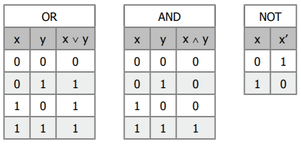

서울대학교 컴퓨터공학과 이재진 교수님의 "확장형 고성능 컴퓨팅" 강의를 필기한 내용입니다.
Numeric system
- “수” 는 추상적인 개념, “숫자” 는 “수” 를 표현하는 표현법 (representation)
- Positional number system: 숫자의 위치에 따라 weight 가 달라지는 것
- 일반적으로 알고있는 숫자 시스템이 이거다: 가령 십진수 365 에서 3은 의 weight, 6은 의 weight 인 것 처럼
Signed, Unsigned
Sign-magnitude
- 가장 단순한 생각은 MSB 로 부호를 표현하고, 나머지로 숫자를 표현하면 된다는 것이다.
- 이것을 Sign-magnitude 라고 하고, 이 방식의 문제점은 대략:
- 더 많은 register 사용하게 된다는 것과
- 양의 0 과 음의 0 이 존재한다는 점 (
0000...와1000...) 이 있다.
Radix Complements
- 주객전도식으로 설명하자면, Radix complement 는 2 (혹은 1) 의 보수에 대한 N-진법 대상 일반화이다.
- 일단 base 에 대해 ” 의 보수” 는 (단, 이면 ) 로 정의한다.
- 그리고 ” 의 보수” 는 로 정의한다.
- 참고로 저 에서 은 뺄셈이 아니다.
- 그냥 ” 의 보수” 가 맞는 표현이고, 저것을 뺄셈으로 취급해 계산해서 호칭하는 것은 잘못된 것이라는 것.
- 한마디로 ” 의 보수” 가 아니라 ” 의 보수” 가 맞는 표현이라는 소리다.
- 물론 근데 귀찮아서 주인장도 ” 의 보수” 라고 말할 예정.
- 따라서 이다.
vs complement
- Signed integer 에서 음수를 bit 으로 표현할 때 1의 보수 (’s complement) 를 사용하는 것은 여전히 양, 음의 0 이 있는 문제가 있다.
0000...은 양의 0,1111...은 음의 0
- 그래서 거의 모든 architecture 에서는 2의 보수 (’s complement) 를 사용한다.
- 여기에서는 이런 문제가 없고,
- 연산하는 것도 bit reverse 하여 1의 보수로 만든 다음 1을 더해주면 되기 때문에 아주 편하다
- 심지어 뺄셈도 그냥 2의 보수로 만든 다음 덧셈회로에 찔러주면 된다.
- 참고로 1의 보수 표현에서의 범위는 이고, 2의 보수 표현에서는 이다.
Operation
- 음수의 나눗셈에 대해서는 Euclidean division 을 사용한다.
- 즉, 나머지는 무조건 양수인 것.
- 가령 는 가 되어 몫이 , 나머지는 이다.
- 모든 연산에 대해서는 연산 이후 mod 를 씌워서 overflow 를 절삭한다.
- 이와 같은 연산법을 Modulo-m operation 라고 한다.
- 이에 따라 mod 가 같으면 같은 값이 된다 (Congruence relation).
- 가령 3-bit 에서 5 와 13 은 같고 (),
- 7+3 의 결과는 2 다 ().
Bitwise

- 뭐 이건 계산방법만 위 그림 보고 익혀두면 된다.
XOR: 다르면 1XNOR: 같으면 1NOR: not-ORNAND: not-AND
- 참고로
NAND(과NOR) Functionally complete 하다고 한다.- 즉,
NAND만 가지고 (혹은NOR만 가지고) AND, OR 등의 모든 bitwise 를 표현할 수 있다.
- 즉,
Logic Gate
- Logic gate 는 위와 같은 bitwise 에 대한 (논리적 혹은 물리적) 구현체라고 생각하면 된다.
- 즉, 이놈은 하나 이상의 bitwise operation 을 수행하는 unit 인 것.
- 조금 수학적으로 표현해 보자면,
- 가 집합 이고
- 는 길이 의 binary stream 일 때,
- Logic gate 는 의 함수이다.
- 보통은 이것을 그림 (기호) 으로 abstract 한다.
- 아래 그림 참고하시게
- 어떤 한 logic gate 를 다른 logic gate 들로 나타내는 것을 Combination 이라고 한다.
- 가령 아래 그림은
XOR를AND,OR, 그리고NOT으로 나타낸 것이다.
- 가령 아래 그림은
Shift
- Shift 에는 두 종류가 있다:
- Logical shift 는 너가 생각하는 그거다: Shift 하면서 생긴 빵꾸에는 무조건 전부 0을 채운다.
- Arithmetic shift 는 right shift 가 다르다: Right shift 할 때의 빵꾸는 MSB 로 채운다.
- 즉, 음수면 음수가 유지된다는 것.
- 당연히 lshift 는 곱셈, rshift 는 나눗셈에 대응
- 따라서 arithmetic rshift 를 하면 euclidian division 의 몫이 나온다.
- C 에서는 compiler 마다 다를 수 있다.
- 이건 C99 표준에는 이것에 대해 정의하고 있지 않 기 때문.
- GCC 의 경우에는 signed integer 의 경우에는 arithmetic shift 를 해서 부호를 유지하고, unsigned integer 의 경우에는 logical shift 를 해서 양수를 유지한다.
Sign extension
- Sign extension 은 BP unpack 시에 빈공간들을 뭐로 채우냐에 대한 내용이다.
- 당연히 packed bit 는 그대로 가져오고 넓어진 공간은 packed bit 의 MSB 로 채운다.
Addition Overflow
Unsigned int
- 이므로 에 들어온다.
- 근데 수치적으로 와 는 각각 이므로 는 까지다.
- 따라서 에서 는 mod 에 의해 절삭된 overflow 이다.
Signed int
- , 모두 양수인 경우에는 가 overflow 이다.
- 각각은 에 들어오기 때문에 더하면 인데 는 에 들어와야 하기 때문.
- 이 경우에 대해서는 MSB 가 0에서 1로 바뀌기 때문에 2’s complement 의 관점에서는 양수의 덧셈이 음수가 되는 것처럼 보인다.
- , 모두 음수인 경우에는 가 overflow 이다.
- 각각은 에 들어오기 때문에 더하면 인데 는 에 들어와야 하기 때문.
- 이 경우에는 반대로 MSB 가 1에서 0으로 바뀌고, 따라서 음수의 덧셈이 양수가 되는 것 처럼 보인다.
- 이것을 다르게 정리하면, MSB 의 계산에 사용되는 carry bit (carry going into the MSB) 와 MSB 계산 후의 carry bit (carry coming out of the MSB) 가 다르다면, overflow 가 난다.
- 아래의 표를 보시라; 외울건 아니고 생각해보면 당연한 것이긴 하다.
- 근데 이것이 중요한 이유는 다음에 나오는 adder 때문이다.
- 즉, 두 carry bit 가 다르면 overflow 이기 때문에, 두개를
XOR하여 overflow 를 감지할 수 있기 때문.
Adder
Half, full bit adder
- Half adder: 비트 두개 (, ) 를 받아 결과 () 와 carry bit () 를 반환
- Full adder: 비트 두개 (, ) 와 carry input () 을 받아 결과 () 와 carry out () 을 반환
- 뭐 대략 아래처럼 생겼댄다. 외우지는 않아도 됨
N-bit unsigned int adder
- 따라서 Half adder 하나와 Full adder 개를 이어붙이면 -bit unsigned int adder 가 된다.
- 즉,
- 이때는 마지막 carry () 이 1이면 overflow 이다.
- 위 그림에는 모두 full adder 인데 상관없다.
N-bit signed int adder
- 그리고 그냥 Full adder 를 개 이어붙이면 -bit signed int (2’s complement) adder 가 된다.
- 즉,
- 이때는 위에서 말한 MSB 양쪽의 carry bit 가 같은지 다른지를 통해서 overflow 알아낸다.
- 즉, 으로 알아낼 수 있고, 이것을 그림으로 그려보면 아래와 같다.
Subtractor
Half, full bit subtractor
- Adder 가 carry bit 를 필요로 했다면, Subtractor 는 borrow bit 를 필요로 한다.
- 즉,
0 - 1의 경우1를 앞에서 빌려와야 하기 때문.
- 즉,
- 따라서 half, full 도 adder 에서의 carry 를 그냥 borrow 로 바꾸면 됨
- Half subtractor: 이놈은 bit 두개 (, ) 를 받아 결과 () 와 borrow bit () 를 반환한다.
- Full subtractor: 이놈은 bit 두개 (, ) 와 borrow in () 를 받아 결과 와 borrow out () 을 반환한다.
- 여기서 borrow in 은 앞선 연산이 빌려간 것, borrow out 은 현재 연산이 빌리는 것이라고 생각하면 된다.
- 이놈의 경우 어떻게 연산되는지 헷갈릴 수 있는데, 다음의 표를 참고하자.
- 다만 저 , , 일 때 , 이 되는 상황이 잘 이해가 안된다면, 1 bit 를 빌려와 가 되고, 여기서 와 이 하나씩 빼가니까 결과는 0이고, 1을 빌려온 것이 된다.
N-bit unsigned subtractor
- -bit unsigned subtractor 는 그냥 half subtractor 하나와 full subtractor 개를 이어붙이면 된다.
- 즉,
- 뭐 위 그림에는 모두 full subtractor 이긴 한데 이 차이는 별 의미 없다
N-bit signed subtractor
- 여기서의 아이디어는 그냥 하나를 2의 보수로 음수로 만든 다음 N-bit signed adder 를 사용하자는 것이다.
- 2 의 보수로 만드는 것은 bit 를 다 뒤집어야 하기 때문에, subtract bit 을 하나 받아서 의 모든 bit () 에
XOR을 해주고 - 또한 1을 더해줘야 하기 때문에, 이 1 은 에다 집어넣는다.
- 2 의 보수로 만드는 것은 bit 를 다 뒤집어야 하기 때문에, subtract bit 을 하나 받아서 의 모든 bit () 에
- 즉, 위 그림처럼 되는 것.
Multiplier, Divider
부실한 설명
- 설명이 좀 부실하긴 한데, 자세하게는 몰라도 되니까 패스
- 곱셈은 10진수 곱셈 생각하면 된다.
- 각 자릿수를 곱해주고 더해주는 것을 반복하듯이
- 각 bit 를
AND해주고 더해주는 것을 반복한다. - 즉, AND gate 와 N-bit signed bit adder 를 여러개 사용해서 구현한다.
- 곱셈/나눗셈:
- 나눗셈은 뺄셈의 연속이므로 substractor 를 여러개 가져와서 사용
- 참고: MUX (muliplexer): 입력 X, Y 와 selector 총 세개의 입력을 받아 selector 에 따라 X 혹은 Y 를 결과로 반환